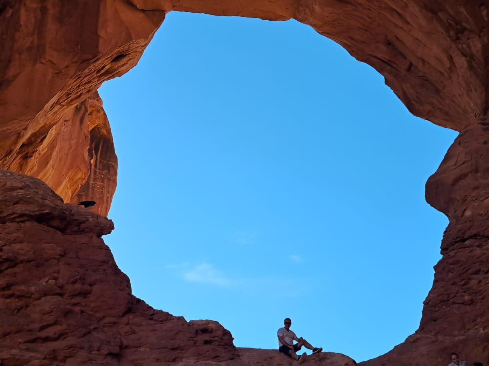
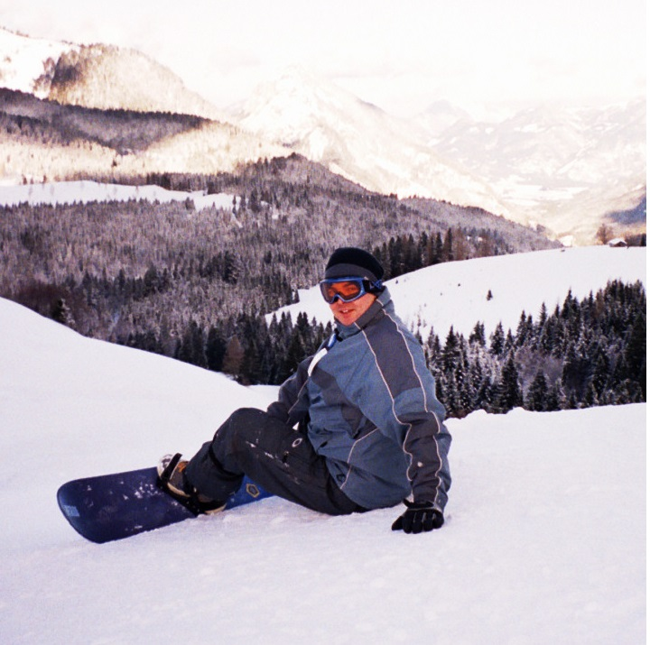
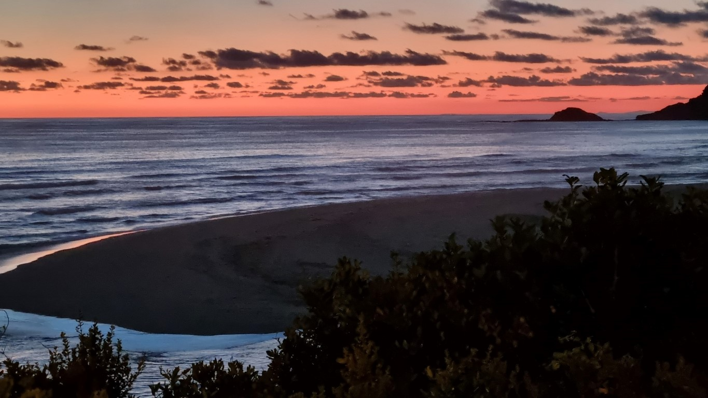

Whether it's just a short local break or a long international holiday, the world offers interesting history and beautiful places to explore. My wife is my favourite travel buddy.
  I've played hockey since I was 7 years old. I love the team environment and competition.
In my youth I was a useful player - now I enjoy mentoring my much younger team mates!
I love being able to help those less fortunate than myself. I get involved through my church or in my local community wherever I can.
I've played the guitar since I was 10 and developed a love for a wide range of music as I grew up.
My CD collection (now Spotify) ranges from classical to rock. I miss being able to browse though other people's CD collections while visiting.